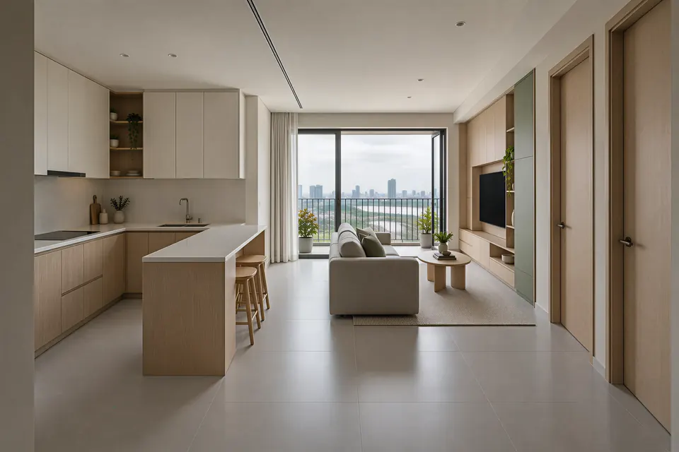
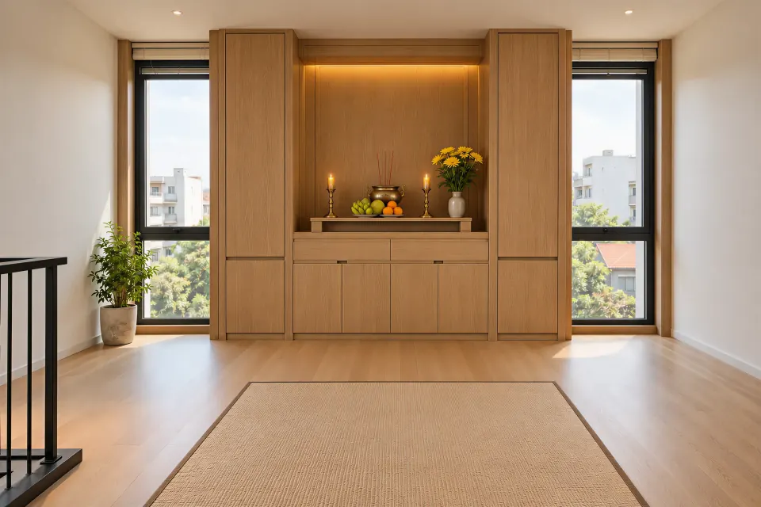
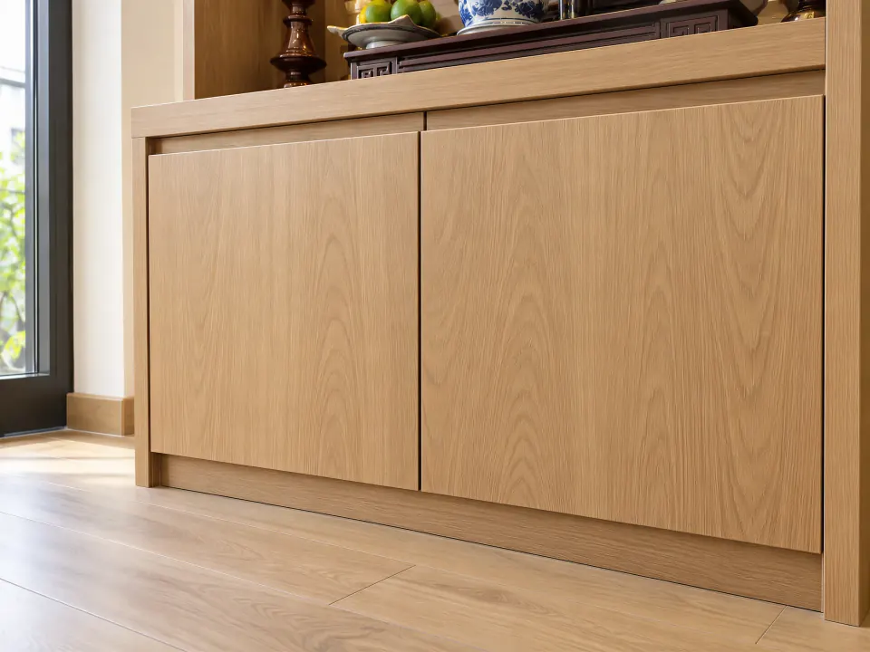
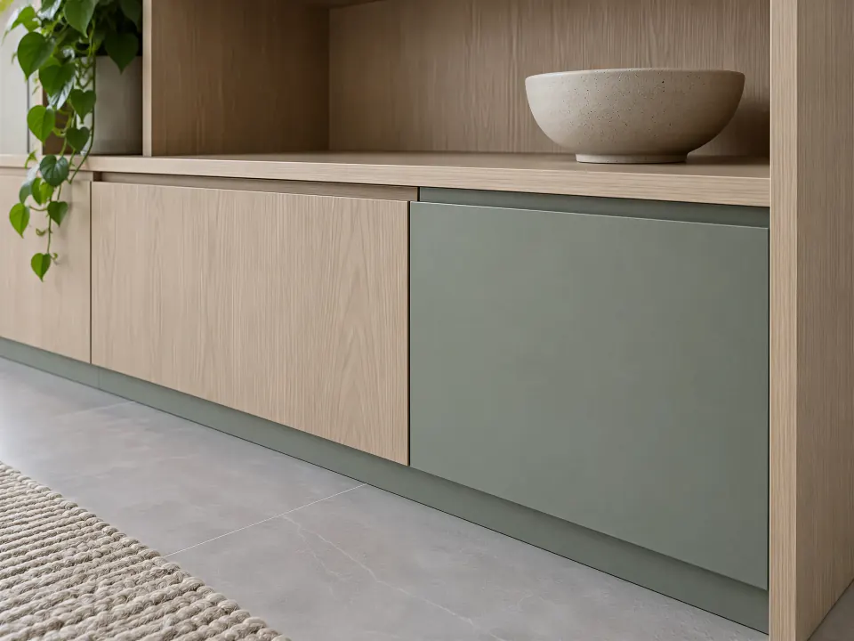
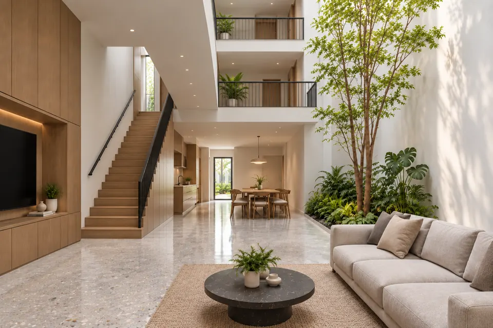
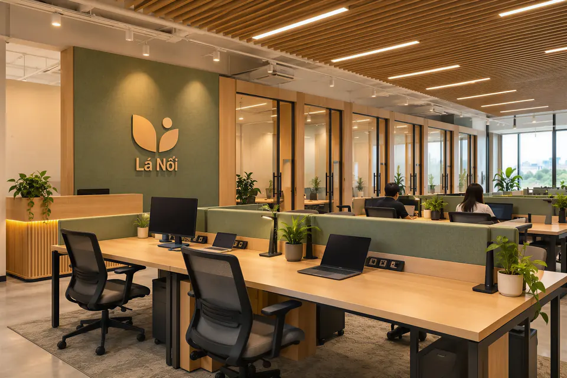
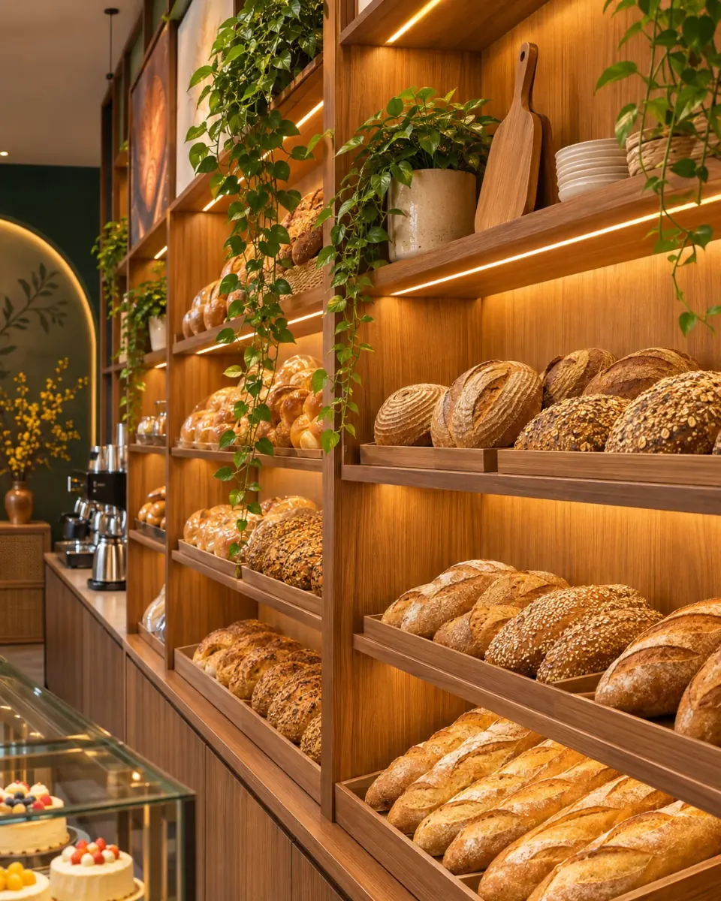
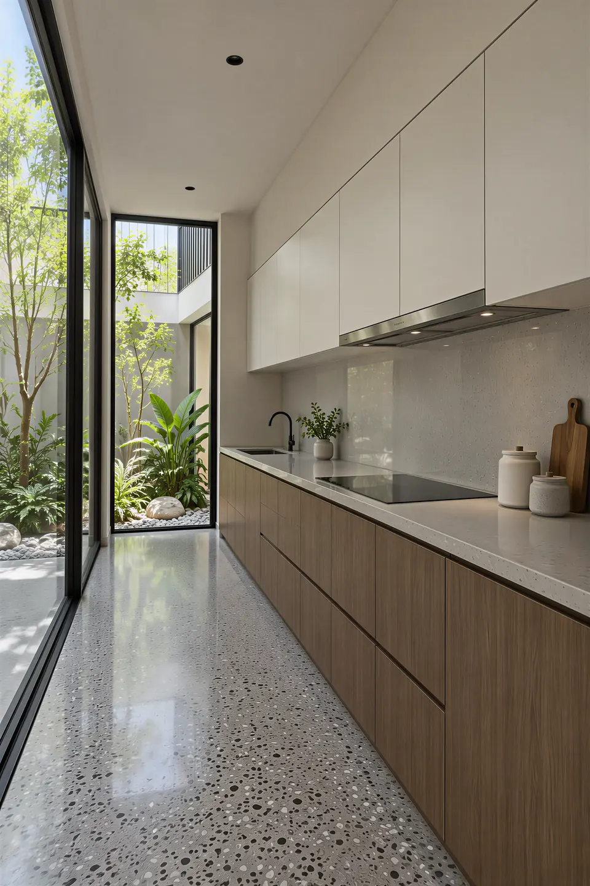
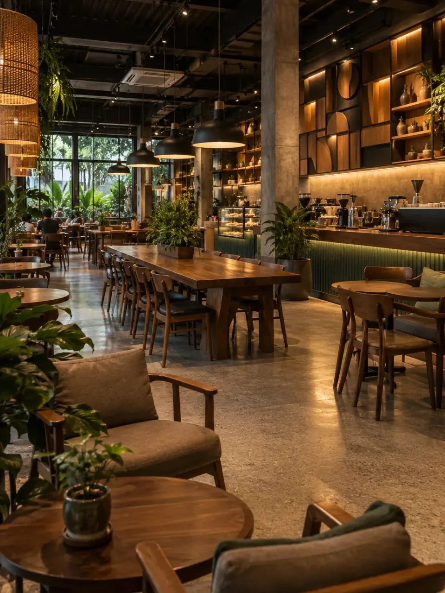
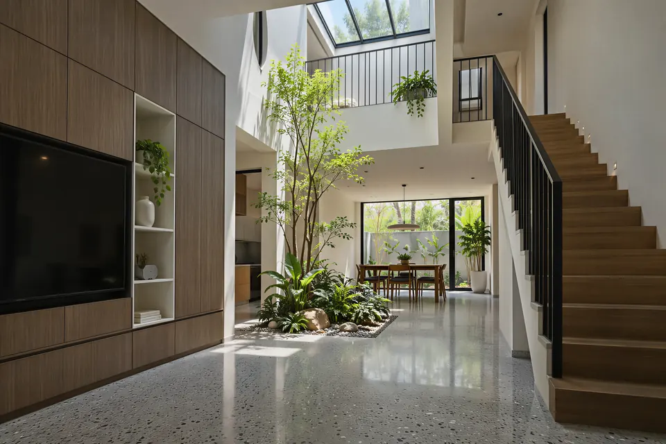

<!-- @dsCard group="Page" height=4800 -->
<!-- GENERATED by scripts/docs/build-design-system.mjs from scripts/docs/blocks-preview.json; do not edit. -->
<link rel="stylesheet" href="https://fonts.googleapis.com/css2?family=Plus+Jakarta+Sans:ital,wght@0,300;0,400;0,500;0,600;0,700;1,300;1,500&display=swap">
<script>addEventListener("click", (event) => { if (event.target.closest("a[href]")) event.preventDefault(); }, true);</script>
<script>document.documentElement.lang = "vi"; document.documentElement.classList.add("motion-fallback", "motion-ready");</script>
<style>.project-hero { height: 720px; min-height: 0; }</style>
<main id="noi-dung">
<section class="hero detail-hero project-hero" id="top" data-header-tone="inverse" aria-labelledby="project-title">
  <figure class="hero-photo"></figure>
  <div class="hero-shade" aria-hidden="true"></div>
  <div class="hero-content">
    <h1 class="hero-kicker" id="project-title" data-motion-hero-kicker data-en="Oak apartment">Căn hộ gỗ sồi</h1>
    <p class="hero-title" id="page-title" data-motion-words data-motion-hero-title>
      <span class="detail-hero-line-mask"><span class="detail-title__quiet" data-motion-word-source><span data-en="A two-bedroom home">Căn hộ hai phòng</span></span></span>
      <span class="detail-hero-line-mask"><span class="detail-title__quiet" data-motion-word-source><span data-en="in warm ">ấm màu </span><em data-en="oak">gỗ sồi</em></span></span>
    </p>
    <a class="hero-cta" href="#lien-he" data-scroll-to data-motion-hero-fade data-en="Design your own space">Thiết kế không gian của bạn</a>
  </div>
  <button class="scroll-cue" type="button" data-scroll-cue aria-label="Cuộn đến phần tiếp theo" data-en-aria-label="Scroll to the next section">
    <span data-scroll-cue-label data-vi="CUỘN XUỐNG" data-en="SCROLL DOWN">CUỘN XUỐNG</span>
  </button>
</section>
<section class="blk blk-title section-gap" data-header-tone="ink"><h2 data-motion-lines data-en="A compact, warm and easy home">Một căn hộ gọn, ấm và dễ ở</h2></section>
<section class="blk blk-paragraph section-gap" data-header-tone="ink"><p data-en="The owners wanted a two-bedroom apartment with storage for the whole family that still felt open. We chose oak as the main material, with sage paint and cove lighting to keep the rooms warm in the evening.">Gia chủ cần một căn hộ hai phòng ngủ đủ chỗ cất đồ cho cả nhà mà vẫn thoáng. Chúng tôi chọn gỗ sồi làm chất liệu chính, điểm thêm sơn xanh rêu và đèn hắt để không gian ấm vào buổi tối.</p>
<p data-en="Every cabinet and shelf was designed to measured dimensions, CNC-cut in our workshop and installed quickly, with little dust and little disruption for the neighbours.">Mọi tủ, kệ được thiết kế theo số đo thực tế, cắt CNC tại xưởng rồi lắp đặt trong thời gian ngắn, ít bụi và ít làm phiền hàng xóm.</p></section>
<section class="blk blk-facts blk-facts--4 section-gap" data-header-tone="ink">
  <ol class="blk-facts__list">
    <li class="blk-facts__item" data-motion-up data-motion-delay="0"><h3 class="blk-facts__label" data-en="Project type">Loại công trình</h3><p class="blk-facts__text" data-en="Two-bedroom apartment">Căn hộ hai phòng ngủ</p></li>
    <li class="blk-facts__item" data-motion-up data-motion-delay="0.15"><h3 class="blk-facts__label" data-en="Style">Phong cách</h3><p class="blk-facts__text" data-en="Warm minimal, oak and sage">Tối giản ấm, gỗ sồi và xanh rêu</p></li>
    <li class="blk-facts__item" data-motion-up data-motion-delay="0.3"><h3 class="blk-facts__label" data-en="Scope">Hạng mục</h3><p class="blk-facts__text" data-en="Interior design, fabrication and installation">Thiết kế, sản xuất, lắp đặt nội thất</p></li>
    <li class="blk-facts__item" data-motion-up data-motion-delay="0.44999999999999996"><h3 class="blk-facts__label" data-en="Aftercare">Bảo hành</h3><p class="blk-facts__text" data-en="Maintenance after handover">Bảo trì sau bàn giao</p></li>
  </ol>
</section>
<section class="blk blk-image-text section-gap" data-header-tone="ink">
  <figure class="blk-image-text__figure"></figure>
  <div class="blk-paragraph blk-image-text__copy"><p data-en="The kitchen units run the full length of the wall, and an oak breakfast bar separates the kitchen from the living room without a partition. Every door was CNC-cut in our workshop to the measured sizes.">Tủ bếp chạy hết chiều dài tường, quầy bar gỗ sồi tách bếp với phòng khách mà không cần vách. Mọi cánh tủ cắt CNC tại xưởng theo số đo thực tế.</p></div>
</section>
<section class="blk blk-pair blk-pair--left-large section-gap" data-header-tone="ink"><figure class="blk-pair__item"></figure><figure class="blk-pair__item"></figure></section>
<section class="blk blk-image blk-image--right-2-3 section-gap" data-header-tone="ink">
  <figure class="blk-image__figure"></figure>
</section>
<section class="blk blk-quote section-gap" data-header-tone="ink"><blockquote><p data-en="Tight joints, even doors, still like new after two years.">Tủ khít mạch, cánh đều tay, ở hai năm vẫn như mới.</p><cite data-en="Apartment owner">Gia chủ căn hộ</cite></blockquote></section>
<section class="blk blk-contact section-gap" id="lien-he" data-header-tone="ink">
  <h2 class="blk-contact__title" data-en="Want a home like this?">Muốn một căn hộ như thế này?</h2>
  <a class="blk-contact__zalo" href="https://zalo.me/0949131050" target="_blank" rel="noopener" data-en="Chat on Zalo">Nhắn Zalo</a>
</section>
<section class="blk blk-projects section-gap" data-header-tone="ink" data-motion-left>
  <div class="blk-projects__track">
    <a class="project-card project-card--high blk-projects__card" href="/vi/projects/can-ho-go-soi-am/" data-en-href="/en/projects/warm-oak-apartment/">
      <span class="project-card__media"></span>
      <span class="blk-projects__name" data-en="Warm oak apartment">Căn hộ gỗ sồi ấm</span>
    </a>
    <a class="project-card project-card--low blk-projects__card" href="/vi/projects/nha-pho-gieng-troi/" data-en-href="/en/projects/light-well-townhouse/">
      <span class="project-card__media"></span>
      <span class="blk-projects__name" data-en="Light-well townhouse">Nhà phố giếng trời</span>
    </a>
    <a class="project-card project-card--high blk-projects__card" href="/vi/projects/van-phong-lam-viec-chung/" data-en-href="/en/projects/shared-workspace/">
      <span class="project-card__media"></span>
      <span class="blk-projects__name" data-en="Shared workspace">Văn phòng làm việc chung</span>
    </a>
    <a class="project-card project-card--low blk-projects__card" href="/vi/projects/tiem-banh-ngot/" data-en-href="/en/projects/neighbourhood-bakery/">
      <span class="project-card__media"></span>
      <span class="blk-projects__name" data-en="Neighbourhood bakery">Tiệm bánh ngọt</span>
    </a>
  </div>
</section>
<section class="blk blk-cta section-gap" data-header-tone="ink"><a class="blk-cta__link" href="/vi/residential/" data-en-href="/en/residential/"><span data-en="More residential spaces">Xem thêm không gian nhà ở</span><span class="blk-cta__arrow" aria-hidden="true"></span></a></section>
<section class="blk blk-news-cards section-gap" data-header-tone="ink">
  <h2 class="blk-news-cards__title" data-en="Other news">Tin khác</h2>
  <div class="home-news__grid">
    <a class="home-news__item" href="/vi/news/chon-tu-bep-go-cong-nghiep/" data-en-href="/en/news/choosing-engineered-wood-kitchen-cabinets/">
      <span class="home-news__media"></span>
      <span class="home-news__text">
        <span class="home-news__group" data-en="Residential spaces">Không gian nhà ở</span>
        <span class="home-news__title" data-en="Engineered wood kitchen cabinets: five questions to ask before you order">Chọn tủ bếp gỗ công nghiệp: năm điều nên hỏi trước khi đặt</span>
        <span class="home-news__more" data-en="Read more">Đọc tiếp</span>
      </span>
    </a>
    <a class="home-news__item" href="/vi/news/lam-noi-that-quan-ca-phe-nho/" data-en-href="/en/news/fitting-out-a-small-cafe/">
      <span class="home-news__media"></span>
      <span class="home-news__text">
        <span class="home-news__group" data-en="Commercial spaces">Không gian kinh doanh</span>
        <span class="home-news__title" data-en="Fitting out a small café: from site survey to opening day">Làm nội thất quán cà phê nhỏ: từ khảo sát tới ngày mở cửa</span>
        <span class="home-news__more" data-en="Read more">Đọc tiếp</span>
      </span>
    </a>
    <a class="home-news__item" href="/vi/news/nha-pho-gieng-troi-go-toi-mau/" data-en-href="/en/news/light-wells-and-dark-timber-townhouses/">
      <span class="home-news__media"></span>
      <span class="home-news__text">
        <span class="home-news__group" data-en="Design trends">Xu hướng thiết kế</span>
        <span class="home-news__title" data-en="Light wells and dark timber: townhouses that are bright and warm">Giếng trời và gỗ tối màu: nhà phố vừa sáng vừa ấm</span>
        <span class="home-news__more" data-en="Read more">Đọc tiếp</span>
      </span>
    </a>
  </div>
</section>
</main>
